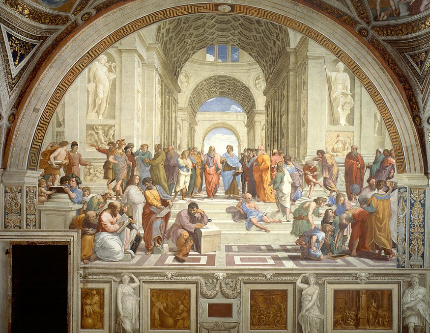
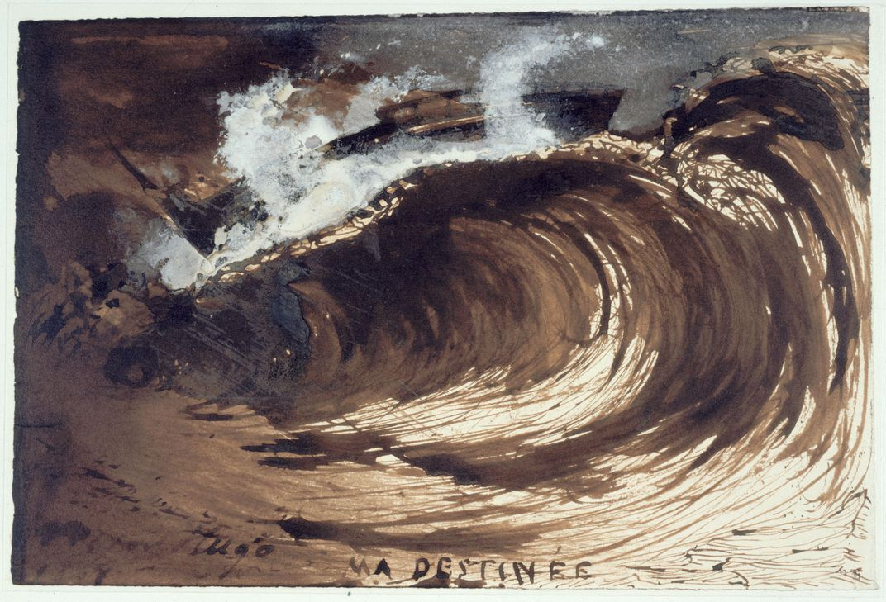
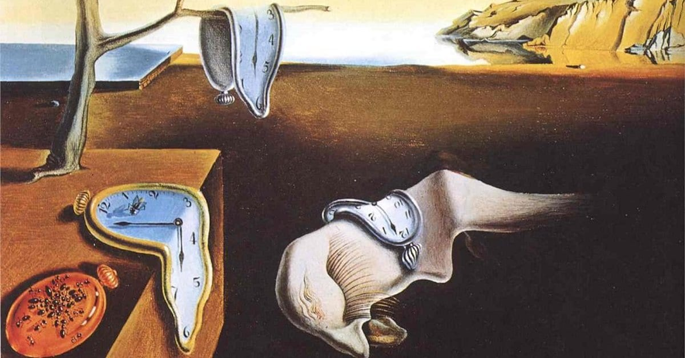
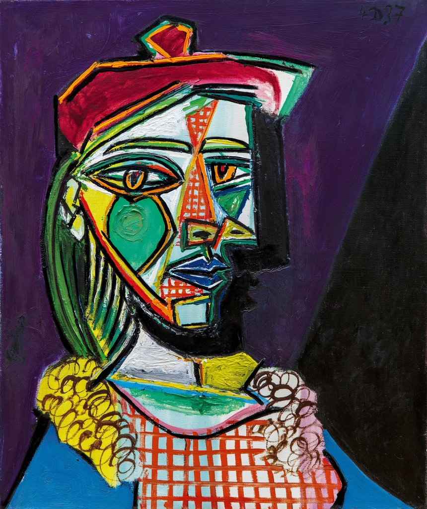

Art Gallery 2020
Find the Art you Love
Top 100 Masterpieces - World's Most Famous Paintings
|
- The painting "Raphael"
- The painting "My destiny"
- The painting "Persistence of Memory"
- The painting "A lover in a beret"
|

4. The painting "Raphael"
Anaspiring artist in the Vatican just got the keys to the Sistine chapel from his friend who is the head of the security.
He slipped into the chapel. The painting in the room was a secret job, and it’s ongoing for several years. The artist of
the painting has kept it so confidential that he has allowed the Pope to see it only once. The young man now climbed the scaffolding
and reached the platform. He was awestruck by the enormity of the painting and the beauty in it. The fine art of the most famous painter of Renaissance Italy, Michelangelo covered the ceiling.
The young artist who bribed the security was Michelangelo’s bitter rival, Raphael.Michelangelo finished the Sistine chapel and went on to paint the altar of the Sistine chapel. Michelangelo also finished
his debt to the Pope by being the architect of St Peter’s cathedral and made sure the dome gets completed. As for Raphael, he went to make some famous paintings and died at a young age. Legend says the Pope
wept in Raphael’s funeral.
|

3. The painting "My destiny"
Throughout the course of his luminous career, Victor Hugo wrote prolifically: He produced poems and plays,
searing political pamphlets and, of course, celebrated novels like The Hunchback of Notre-Dame and Les Misérables.
Less well known are Hugo’s vast collections of drawings, which he worked on zealously while in exile during Napoleon
III’s reign. Now, Jori Finkel reports for the Art Newspaper, a new exhibition at the Hammer Museum in Los Angeles
puts center focus on his artwork, considering his drawings within the wider scope of his creative output.It is tempting
to ascribe the mood of Hugo’s drawings to the tumult of these years. In an 1867 piece, a huge, frothy wave curls ominously
into the sky, poised to crash at any moment. It is titled “Ma destinée”—My destiny.
|

2. The painting "Persistence of Memory"
With its strange subject matter and dream-like atmosphere, Salvador Dalí‘s painting, The Persistence of Memory,
has become a well-known symbol of Surrealism. Painted during the Dada-inspired movement, the melting-clocks-masterpiece
embodies the sensibilities that define the experimental and eccentric genre. To contextualize the iconic piece's place
in art history, one must understand its unique influences, examine its symbolic content, and appreciate the artist's avant-garde
approach to its creation. When Dalí painted The Persistence of Memory, his artistic practice was guided by the peculiar “paranoiac-critical method.
” Developed by the artist in 1930, the technique relies on self-induced paranoia and hallucinations to facilitate a work of art.
This method was particularly instrumental in the creation of Dalí's “hand-painted dream photographs,” a collection of works that are
stylistically rooted in realism yet unrealistic in subject matter.
|

1. The painting "A lover in a beret"
“It was a fantastic painting,” said Gérard Faggionato, a partner at the David Zwirner Gallery in London. “I haven’t seen such a vibrant Picasso for a long time. Look at the wall power.”
The brightly colored, 22-inch-high canvas, painted on Dec. 4 in the same year as masterpieces such as “Guernica” and “The Weeping Woman,”
was a head and shoulders study of Picasso’s mistress and muse, Marie-Thérèse Walter, whom he had met in Paris 10 years earlier. By 1937,
Ms. Walter had given birth to Picasso’s daughter Maya, and was competing for the artist’s attention with Dora Maar, the model for “Weeping Woman.”
Unusually, “Femme au Béret” had never appeared on the market before, having been acquired by the owner directly from the artist’s estate, according to the Sotheby’s catalog.
It was guaranteed to sell, courtesy of a third-party “irrevocable bid.” It attracted at least three telephone bidders and one in the room.
|
|
|
|
Copyright © 2020
|